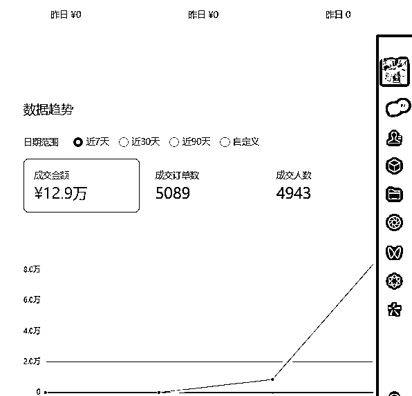

来源：https://r0skcu5k4gf.feishu.cn/docx/CnQjdd0WNoRBJNxkiOdcrygBnxg
我视频跑了140w，播了3X24小时，抛掉退货应该还有12万出头，线上线下加起来平均佣金率应该在48%左右，斩获将近6万收益。

视频号目前确实是一波红利.但是任何的红利，你想要挣到钱，都得付出不亚于任何人的努力。有几句叫做绑着炸弹干电商，调研，努力，思考，执行才是赚钱的密码，当然，少不了名师指路，在这里首先要感谢导师团队的指导和鼓励，以及良好的社群搞钱氛围。
其次，是坚持才能看到希望，再好的行业，你都得干掉80%的同行才能挣钱。不管是干之前的抖音图文带货，还是视频号，我都是一个上手比较慢，比较笨，但是有韧性，很自信的人。下定决心，就会想办法去干。任何项目，我相信，10个人里面只有2个人能够挣到钱，我就一定会全力以赴的成为那20%,如果10个人里面只有1个人能够挣钱，我就是那100%。
当然，大A除外，绿油油一片，惨不忍睹。

视频号我一直干的素人出镜实拍，9月23付费学习。最开始的2个月，我一直自己拍视频，因为之前很少拍，五六分钟的视频，得录四五个小时，表情僵硬，说话不自然没有感情。一度想要放弃，最终在老师的鼓励下，还有很多同学群里嘎嘎爆单，我眼红啊，逼着自己想办法继续干，终于拿到了结果。这一次爆了将近13w，是最多的一次，每一次没爆单都很焦虑，但是焦虑没用，要化成动力。
其实一开始，我找不到窍门，视频号拍了也不爆，前面2个月，我熬了几个通宵，基本都是个位数的利润，很焦虑，后面是逐步跟着框架，然后反复模仿说话的神态语气。
第一次爆是青盐泡芙粉，那会儿说话还不自然，就这样，直播8小时后，开始起量，最终拿下了5000的gmv，收获3000利润，这是第一次爆单。
最后，分享一下这次爆单的核心，纯干货，欢迎大佬们互相交流。
第一，天下武功，无坚不摧，唯快不破。这次框架爆掉，是因为我跟的速度比较快，老师发布框架后，我第一时间就上拼多多买了厨师的衣服，到货之后，我马上进行口播拍摄。打视频号的，家里的维修工装，美团工装，厨师服都得备上一套。
第二，具体问题具体分析，先抄再超。我感觉视频内容完全同质化，很难大爆，因为站在平台角度，完全同质化也影响用户体验，肯定不会给你推流。包括上次爆了爆氧粉我也有改动，这次的品，我贴合自身年纪，加入了“我初中毕业，出生农村，从后厨的洗碗工通过自己的努力，经过20年干上了酒店大厨”的元素，就会让人感觉比较亲近，贴切，更容易代入。
第三，量变产生质变，用数量提升爆率。本次我内容分发了3个视频号，其中2个老号，1个新号，爆掉的是其中的一个老号。值得一提的是，这个老号以前打倪师十五本医疗违规被封了一个星期，又被追杀封了一个月的，出来后我也没有养号，就放了2个月。另外俩号因为我没有做补视频，直播的动作，没有跑起来，但是俩号我评论区引导也有出单。
第四，人货场配合，提升转化率。视频号直播带有明显的乡土气息，纯素人也可以干，不像专业的直播间要求那么高，但是想要提升转化率，咱们尽可能的扮演的像一点，比如我戴个厨师的帽子直播，转化率肯定好一点，此外，主播越土，越真实，转化率也越高。典型的是我干了一个通宵卖了800单，后面我母亲来帮我播，我母亲是第二次直播，按照我的话术来，普通话都说的不利索，带有明显的土味儿，但是转化率高的离谱，5个小时干了2000单，当然，也有我视频流量后面跑起来的缘故。
第五，一力降十会，拉时长。但是注意两个前提，拉时长的前提是一定要有陆续出单，且视频一定要至少跑到6000以上，这个很重要，不然就会像我一开始干直播那样，视频不好，全是直播进人，播到天荒地老都没用。本次的视频跑到10万以后，我熬了一个通宵，早上8点，流量猛猛提升，然后缓了一会儿，继续拉时长，又猛猛的跑起来了。
第六，利用人性，引导操作，打磨好话术。视频号直播要求很低，但是好的话术，肯定能提升转化率，其实话术模板就那么几个，咱们根据时间点适当的更改就好。
第七，优化细节，适应变化。比如2.1号12点之后，很多物流就停了，这时候，就得去广场刷，然后自己找商家，确认能否发货，一定要确认好。我打的线下的品，确认是2月1号之后物流不发了，我就连夜找了另外一家，确认2号下午3点前还能发，就换了链接打。后面有有别的兄弟和我分享另外一家说是下午5点前能发货的，我第一时间是去找到商家，结果是沟通有误，是截止15点儿不是5点，所以细节要注意。
包括直播的时候，已经确认是初八发货了，但是我发现江西和西安的用户下不了单，我就果断找到商家，原来是商家还想着年前争取发货，但是江西和西安因为大雪物流停运，商家直接关闭了这俩地方下单的权限，导致用户无法提交订单付款，和商家沟通后，打开了权限就能下单了。
最后，是适应变化，物流停运，就改话术，因为物流停运所以价格便宜，就很合理了。同样的项目，用心去做，去专注，去改变，去优化，一定能取得好成绩。
最后谈一下快速剪辑经验。如图，用了这个模板，每次只需要替换特效＋lut滤镜＋覆盖图＋背景图，几秒钟产生一条去重新视频。
最后写一点思考，之前干抖音图文，视频号带货，思考一下自己的核心竞争力和护城河是什么？
其实无非就是账号数量，然后拼体力，拼谁能熬，谁能第一时间发掘爆款，跟上爆款，这些学习能力有用。
同时不能沉迷于奶头乐，因为行业会换，也要注重长期发展，沉淀自己的能力，比如真人口播的能力，镜头感这些，磨炼出来，咱们才能走的更远。
有时候我会思考一下，咱们视频号的终局是什么？
目前来看，视频号的终局，可能就是培训或者打付费流或者矩阵放大爆单概率。
培训已经有很牛的培训团队了，付费流心里有点虚，好的投手，都是拿钱烧出来的，比如我现在有70w，但是烧到10w的时候，我心里就已经慌得一批了，没有牛逼的大佬带，或者人货场跟不上，不敢玩儿。
矩阵放大其实是目前最适合自己的，自己打爆视频，然后请几个中年妇女直播，这里要解决的就是设备和号的问题。
另外，最近也准备学习打抖音自然流直播，因为视频号打爆，看机缘，看运气，还会有剩下的时间，我就跟着线下的大佬学习打抖音自然流直播，抖音直播其实比视频号直播难一些，自然流直播考验的是起号的能力，一旦起号，对主播要求就不高了，就可以复制操作，用人工数量去放大，一个号可以挺十天半个月，打账号轮动，。
这是线下看到的收益图，利润里60%以上，退货率50%，比较高。
又是新的起点，龙年祝我好运。2024希望自己挣到人生的第三个一百万，并且可持续发展！欢迎同行大佬交流探讨！